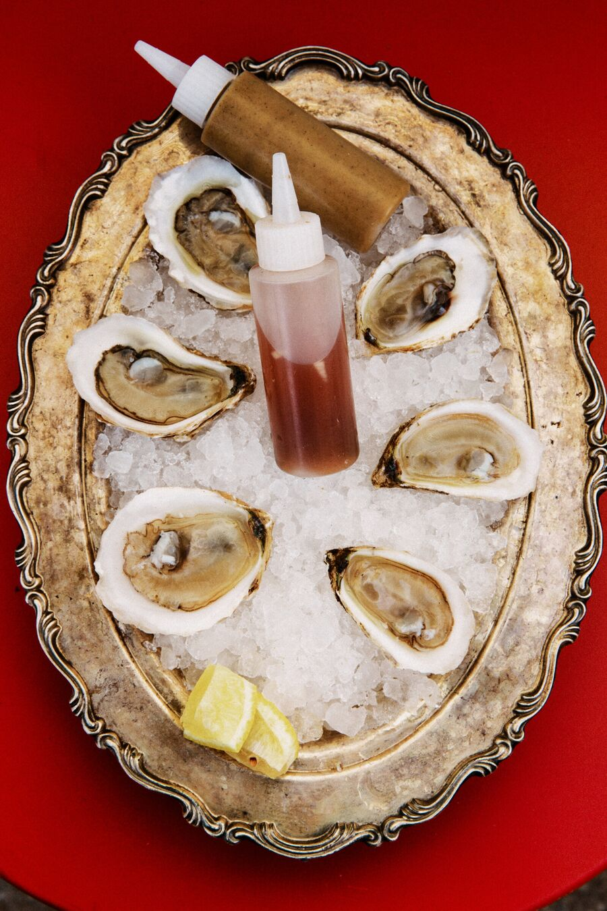
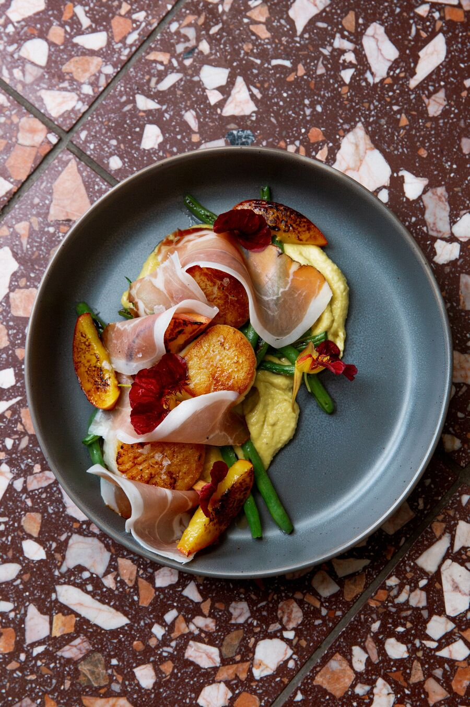

A living document. Oysters and tinned fish are always on; the rest turns with the season and the market.


Photos by Lindsey Mak
Thursday–Monday · 4:30–9:30pm
We’re tiny: 25 seats at the bar indoors, with low chairs so everyone fits, plus a patio when the weather cooperates. Book online through Resy for parties of 1–4. For five or more, call us to book, and a private dining space is in the works. We always hold at least a third of our indoor seats for walk-ins, and the patio is first come, first served too. Carryout case-by-case, just text us.
$46 a dozen. Mix East and West Coast however you like; the list turns with what’s coming in.
West Coast
East Coast
Consuming raw or undercooked meats, poultry, seafood, shellfish, or eggs may increase your risk of foodborne illness.
Served with toasted house made bread, seasoned saltines, pickles, oyster cream cheese, & hard boiled egg.
Served with blini, chives, crème fraîche, grated egg yolk. Priced 12g | 30g.
$95 per person.
Entirely Michigan grown and produced wine, minimal intervention. Natural, food-friendly wines. Priced glass / bottle.
Mostly Michigan beers, and some other stuff too — produced by our friends.
Menu rotates with the season — ask your server about today’s oysters and specials.